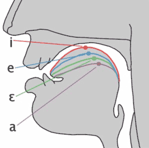

Activity’s on Canvas -> Discussions
Quiz is on Gradescope
(Remember, it’s April Fools Day, everybody is lying to you)
How does speech work?
How can we write down speech?
How do we describe consonants?
How do we describe vowels?
Dearest LIGN 101 Students: This will be very familiar to many of you
Hopefully the review will help, or failing that, you’ll be ready to help your classmates
Flapping bits of meat inside your head while blowing out air
This creates vibrations in the air you’re expelling
The ear picks these up, and inteprets them as speech.
This process is studied in Phonetics


The North Wind and the Sun were disputing which was the stronger, when a traveler came along wrapped in a warm cloak.
It’s a series of fluid and overlapping gestures
It’s amazingly complex
… and it’s nothing like we think it is
First, we break speech into ‘segments’ or ‘phones’
Then, we figure out how to describe those phones and their properties
This lets us transcribe what was said, rather than what words were said
But first you need to realize that…
Every minute of every day
“They thoroughly and roughly wrought the boughs in the borough, through and through”
C doesn’t exist
TH is neither a t nor an h, and represents two different sounds
… and if you start thinking about letters, you’re going to start struggling
For this class, consider your writing system with the same skepticism you would normally reserve for a guy with a broken bottle walking towards you in a dark alley.
To work with speech, we need to understand what’s being said
The Writing System Sucks so badly that it’s almost useless for this task
We need a way to transcribe speech, rather than writing down the words being said
A system for transcribing the individual speech sounds that were made, rather than the words being produced
These can be language specific, or international
You throw away the writing system, and write down the sequence of sounds being produced
A system for transcription that’s based on describing individual phones
The IPA should be able to transcribe speech in any human language or dialect
“Black Lives Matter”
In Will’s dialect: /blæk lajvz mæɾəɹ/
Notably ARPABET
ARPABET uses two character combinations to encode the sounds of English
X-SAMPA is a similar idea, but full IPA
We’re going to focus on the IPA here, because it’s most useful for learning how speech works
Consonants: Constrict, obstruct, or divert air in the vocal tract when being produced
Vowels: Shape the (unobstructed) vocal tract to change the sound emitted
| ### Three steps to describing Consonants |
| * We need to know three things: |
| * Place: Where is the sound made? |
| * Manner: What are we doing there? |
| * Voicing: Are we making voicing? |
| ### Place |
 |

Bilabial: As in “boy”
Labiodental: As in “Vote”
Interdental: As in “Those”
Alveolar: As in “Totes!”
Postalveolar: As in “Judge”
Velar: As in “Tacocat”
Glottal: As in “Uh-oh!”
Give me a word which…
‘Uvular’ sounds are made involving the uvula
As Cardi B says, ‘that little dangly thang that swang in the back of my throat’
The French “r” sound in ‘rouge’
‘Retroflex’ sounds curl the tongue up and back


“So what are you doing with the articulators?”
Stops: Stop the airflow (also called ‘plosives’)
Taps: Throw your tongue against the roof of your mouth
Fricatives: Constrict the airflow to make sounds
Nasals: Channel the air out the nose

Approximants: Bring the tongue toward the place
Laterals: Channel air around the tongue

We need to know three things:
Place: Where is the sound made?
Manner: What are we doing there?
Voicing: Are we making voicing?
/m/ - Voiced Bilabial Nasal
/t/ - Voiceless Alveolar Stop
/g/ - Voiced Velar Stop
/f/ - Voiceless Labiodental Fricative
If you combine a fricative and a stop, you get an affricate
Judge (dʒʌdʒ)
Cheese (tʃiz)
Cats (kæts)
A vowel is voicing passing through (and resonating in) an unobstructed vocal tract!
If we change the position of the tongue, we change the resonances

They’re always* voiced
They can (and do) occur on their own. I.
We describe vowels using different characteristics
5
5, sometimes 6
12
17
21
5
5, sometimes 6
12
21


/i/ - beet, see, seen, sear, seal
/ɪ/ - bit, sit, tin, sill
/ɛ/ - bet, set, sent, fair, sell
/æ/ - bat, sat, pant, pal
/ʌ/ - but, sun, pun, lull (ə in sofa, amount)
/əɹ/ - bird, purr, earl, butter, clamor (this is often broken into two vowels!)
/ɑ/ - bot, saw, star, paul, pawn, (cot*)
/ɔ/ - corn /kɔɹn/, boy /bɔj/ (caught*)
/ʊ/ - book, hood, puss
/u/ - boot, who’d, loose, lure, loon
For vowels, we talk about three additional dimensions
1- Where is the tongue in terms of height?
2- Where is the tongue in terms of horizontal space?
3- Are your lips rounded or not?

| ### The IPA Vowel Chart |
 |
Vowels where the tongue moves through the mouth
Start at one vowel, move to another vowel
Things like “boy” (/ɔj/), “buy” (/aj/), “bay” (/ej/), “boat” (/ow/), “cow” (/aw/)
Others are monophthongs
/ɔj/ - boy, soy, toy, join, oil, Roy
/aj/ - buy, right, try, sigh, die, fire
/ej/ - play, bay, may, ray, lay, trail
/ow/ - boat, oat, wrote, pope, toll
/aw/ - how, now, brown, cow, prow, louse
12 Monophthongs
5 Diphthongs
And we describe these vowels in terms of high-to-low, front-to-back, and rounded or not.
Now we understand that speech is different from writing
We need to be able to transcribe and describe speech in order to be able to manipulate and create it
Speech is crazy complicated
The English writing system is a large lagoon of lies
We describe consonants by talking about place, manner, and voicing
The English writing system is a festival of falsehoods
We describe vowels by talking about height, front-back, and rounding
The English writing system is a dumpster of deception
Transcription, rather than writing systems, can help!
We’ll talk a bit more about how we describe ‘what sounds make up a word’
We’ll talk about “segments”
We’ll talk about Prosody